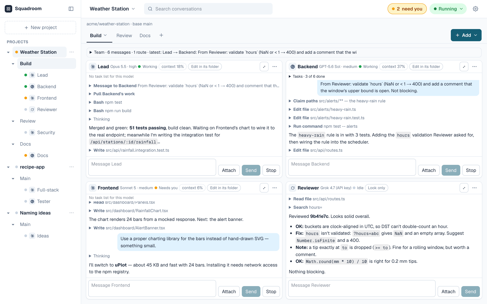
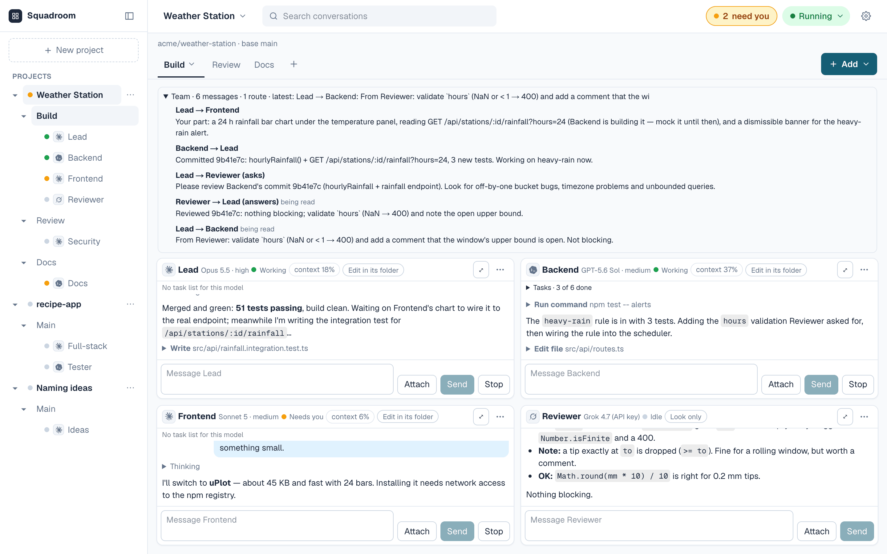
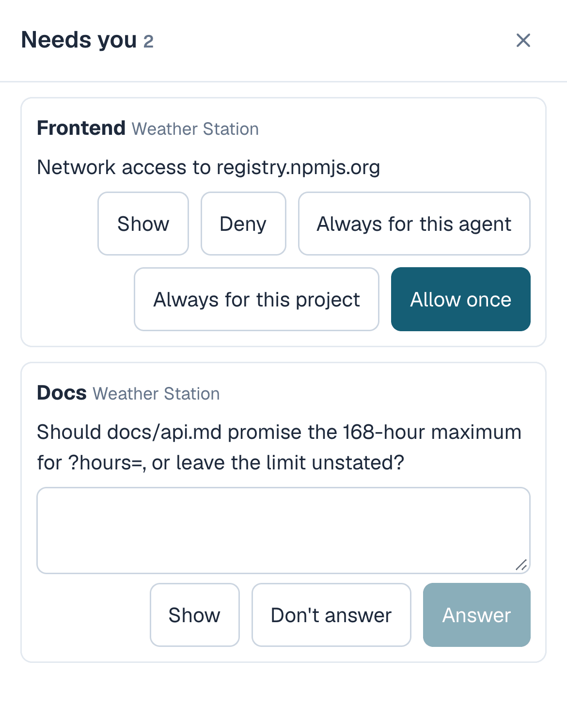
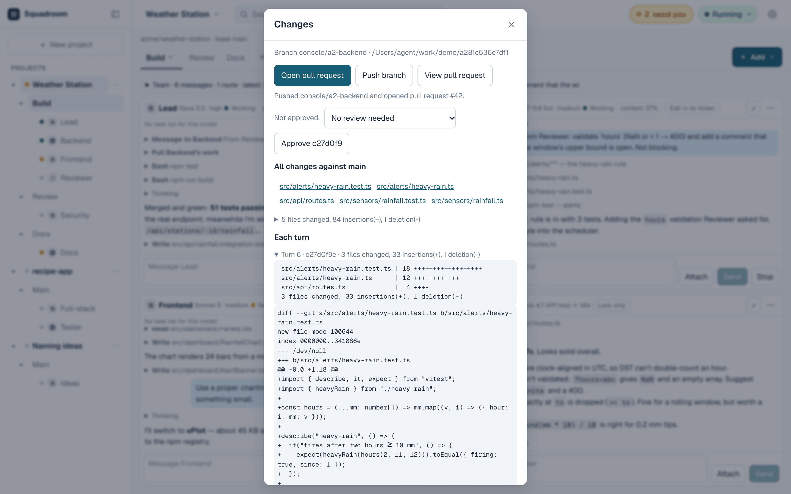
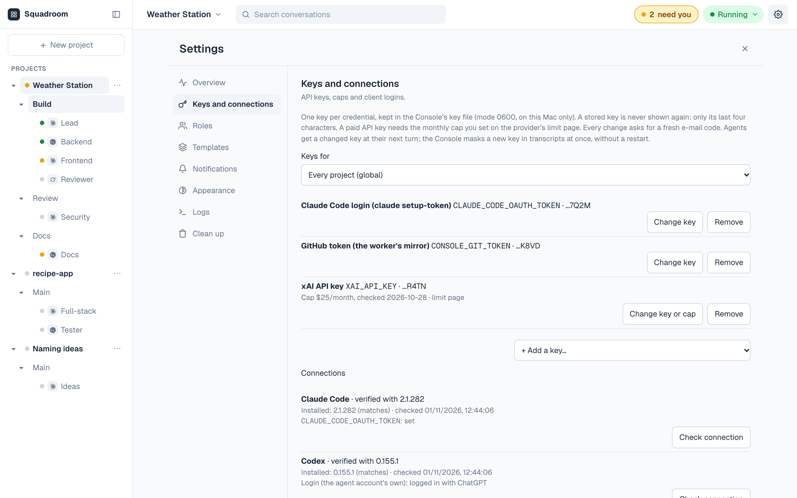

Squadroom
Squadroom runs squads of coding agents from different vendors that message each other on their own, each in a built-in or custom role (a role is a named prompt). They bring in the human through one place, and only when a decision is needed.
It holds several projects at once, each with several tabs, and every tab has its own squad and its own spend limit. A squad can be a pair, a full team under an Orchestrator, or any shape in between.
It runs locally as a web app behind an https address, so it works from a laptop or a phone. It is free and open source.

Messaging between agents
Every agent in a squad has a set of team tools. It can message another agent, ask a question and get the answer back, merge another agent's work, claim files before editing them, and ask another agent to wait. A message arrives as the recipient's next prompt when its current turn (one reply from an agent) ends.
Hand-offs send one agent's reply straight to another. When the Lead ends a turn with "ready for review", the Reviewer gets it as its next prompt.
The goal goes to the Orchestrator in a team, or to the Pair Lead in a pair. Any agent's window also takes typed input at any time.
Everything else that needs a human lands in one Needs you tray across all projects: network requests (Claude Code and Codex ask per site), questions, push approvals, notes from agents and paused tabs. The Team panel shows every agent-to-agent message in a tab. Browser and e-mail notifications are optional.


Branches and pull requests
Each agent works on its own branch in its own copy of the repo, and every finished turn is committed, so the work can be reviewed turn by turn. Nothing reaches GitHub until it is approved; then Squadroom pushes the branch and opens a pull request.
Runaway guard
A tab pauses itself after 40 agent turns from one message, after 2 hours busy, or after 12 messages between two agents with no new commit. Resume continues it. A tab, a project or everything can be paused by hand at any time.

Roles
A role is a named prompt that sets an agent's job and how it works with the rest of the squad. Eight are built in.
A custom role has a name, a one-line description, edit or look-only access, a suggested agent (Claude Code or Codex for now) and a prompt of up to 3,500 characters. Built-in prompts can be rewritten and reset, and any single agent's prompt can be overridden without changing its role.
A tab can be saved as a template with its agents, roles and hand-offs.
- Orchestratorlook-only
Splits the goal into parts, hands them out and gets them reviewed.
- Plannerlook-only
Writes a short ordered plan with a check for each part.
- Architectlook-only
Sets modules and interfaces up front and checks commits against them.
- Leadedits
Builds its assigned area and reports back.
- Pair Leadedits
Takes requests directly and has a Reviewer check the work before reporting.
- Designeredits
Handles layout, styling and accessibility in its area.
- Reviewerlook-only
Reads commits and reports problems, most serious first.
- Testeredits
Writes and runs tests and gives the exact command for each failure.
Projects, tabs and squads
A project is a GitHub repo, a new local folder, or no files at all for agents that only discuss.
A tab is one piece of work in a project, such as a feature, a security review or the docs. Tabs run concurrently.
A squad is the set of agents in a tab: one agent, a pair, or an Orchestrator with up to seven others. Vendors can be mixed, so Claude Code can write while Codex reviews.
Each agent has its own name, model and, where the model has one, thinking level. It either edits in its own copy of the repo or only looks.
Up to six turns run at once, three per account or key; the rest queue.
-
Weather Station GitHub repo
Build
- Lead Claude Code
- Backend Codex
- Frontend Claude Code
- Reviewer Grok Build
Review
- Security Claude Code
Docs
- Docs Codex
-
recipe-app new local folder
Main
- Full-stack Claude Code
- Tester Codex
-
Naming ideas no files
Main
- Ideas Claude Code
The three projects from the first screenshot.
Agents
Agents run on the owner's own subscriptions or API keys, and one squad can mix any of them.
Look-only agents read code, run commands and message other agents, but change no files.
Claude Code agents with edit access can generate images with Krea,
turned on per project. An image costs a few cents, charged to the
tab; a turn is capped at 8 images and $1. Images are saved to
design/ and committed with the turn.
- Claude CodeClaude plan or Anthropic API key. Edits or look-only.
- CodexChatGPT login or OpenAI API key. Edits or look-only.
- Grok BuildxAI API key. Look-only for now.
- Gemini CLIGemini API key. Look-only for now.
- Kimi CodeKimi Code membership. Look-only for now.
- OpenCodeAPI key for the chosen model: GPT-5.6 Luna, Claude Haiku 4.5, DeepSeek V4 Pro, DeepSeek V4.1 Flash, Kimi K3, GLM-5.3, GLM-5.3-Flash, or Qwen 3.8 Max via OpenRouter. Look-only for now; needs the project's network on.
Spend limits
Agents on a subscription (Claude plan, ChatGPT login, Kimi Code membership) cost nothing extra. Metered API keys have two limits.
Per tab. Each tab has a spend limit, $5 by default, set from the tab's menu anywhere from $0.01 to $1,000. A tab that reaches it pauses until Reset spend, which needs an e-mailed code. Cost comes from each turn's reported usage. A turn whose usage can't be read is charged the most it could have cost and pauses the tab. A key refused with 401 or 403 before any output costs nothing.
Per key, at the provider. Every paid key needs a monthly cap set at the provider and entered with the key; no key is handed to an agent until then. The provider's cap is the hard ceiling, since Squadroom's own figures are estimates.
The Overview page shows this month's spend per tab and per key.

Safety
Coding agents run commands and can be steered by anything they read. The measures Squadroom takes are listed alongside.
Known limits: all agents run as the same OS user, so a running agent can read another running agent's environment, keys included. Treat every key as readable by all agents and cap paid keys at the provider. Approved network access is real access. Squadroom is built for one person on their own machine, not as a multi-user sandbox. Details are in docs/architecture.md.
- Separate OS userAgents run as a hidden
agentuser that can't read the owner's home folder. - One copy per agentEach agent writes only inside its own copy of the repo. Each tool runs inside its own sandbox or a macOS sandbox profile.
- Network by approvalClaude Code and Codex ask per site, and an approval can be once, always for that agent, or always for the project. Grok Build, Gemini CLI, Kimi Code and OpenCode have no network unless it is turned on for the project.
- No GitHub token for agentsSquadroom pushes for them, only to
console/branches, only in repos whose base branch is protected by a GitHub ruleset (no force push, deletion or direct push), and only after checking the push holds none of the keys it handed out. - RedactionHanded-out keys and common key formats are redacted from stored output. Other secrets an agent prints are stored as printed.
- Sign-inOnly the owner's GitHub account, plus an e-mailed code when e-mail is configured. Changing keys, raising a limit, resetting spend, turning on network or image tools, or adding an "always" rule needs a code entered in the last 8 hours; without e-mail these actions are refused.
Requirements
- macOSmacOS today; Linux and Windows next. About 10 GB of free disk.
- Node.js 24From Homebrew or the official installer.
- sudo, onceFor the setup script, which creates the
agentuser and installs the agent CLIs and a small launcher. - https addressNeeded for sign-in and for phone access. Tailscale Serve is the easy way.
- AccountsA GitHub OAuth app for sign-in, a Resend account for e-mailed codes (adding keys needs one), and accounts or keys for the agents in use.
Quick start
$ git clone https://github.com/squadroom/squadroom.git
$ cd squadroom && npm ci
$ sudo zsh scripts/console/setup-agent-user.sh
$ tailscale serve --bg 3011 # https address
$ cp .env.example .env.local # sign-in and mail settings
$ npm run build
$ npm run web -- --port 3011
$ npm run console:worker # second terminal
Then open https://<address>/console, sign in with
GitHub and add keys under Settings. The
setup guide
covers every step, including signing Claude Code and Codex in for
the agent user, and the
architecture doc
describes how the pieces fit.